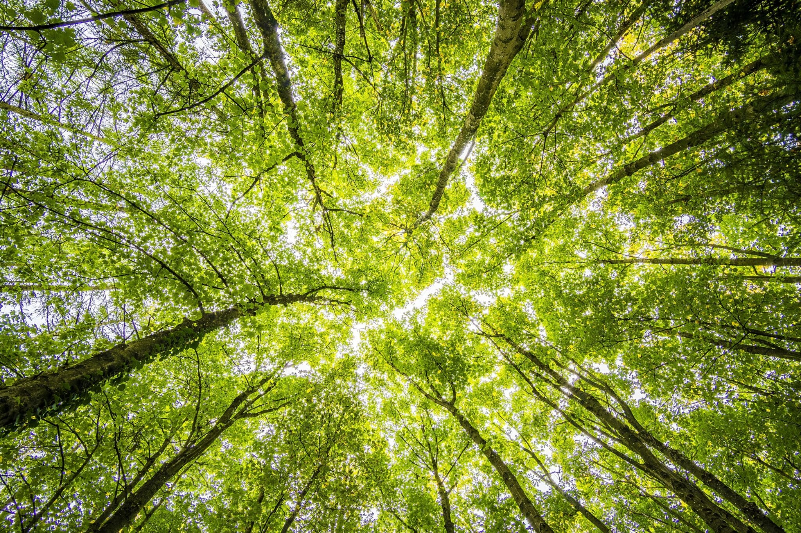
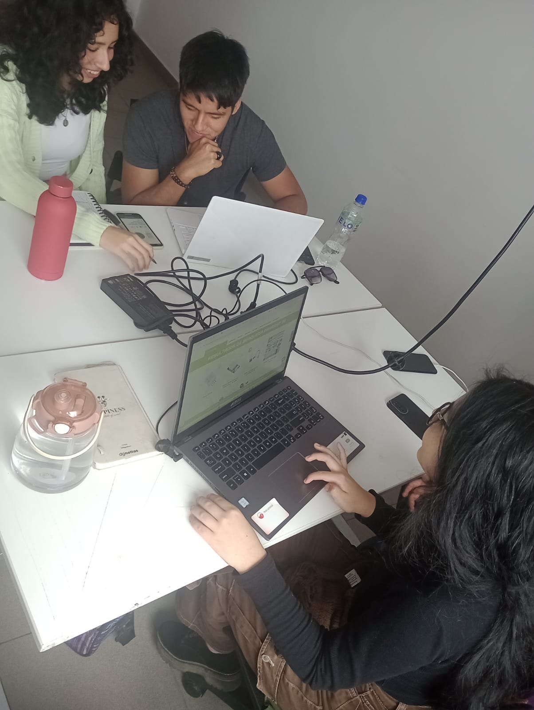

Semana 2: Avance del Proyecto "Niqui"
Esta semana nos sumergimos por completo en el desarrollo del trabajo grupal asignado, el cual tiene como objetivo abordar una problemática relacionada con los Objetivos de Desarrollo Sostenible (ODS). Después de debatir en equipo, decidimos enfocar nuestros esfuerzos en el ODS 15: "Vida de ecosistemas terrestres". Este objetivo busca proteger, restaurar y promover el uso sostenible de los ecosistemas terrestres, combatiendo la deforestación y la degradación ambiental.
ODS
 .
.
Nuestro grupo propuso la creación de un dispositivo llamado "Niqui", diseñado para detectar y monitorear las condiciones ambientales de las poblaciones cercanas a quemas forestales. La idea principal es que este dispositivo, a través de sensores y tecnología de monitoreo ambiental, pueda alertar de manera inmediata a las autoridades cuando se detecten incendios o condiciones peligrosas. Esto permitiría una respuesta rápida y eficaz para mitigar los daños causados a los ecosistemas y las comunidades afectadas por las quemas. El proceso hasta ahora ha sido muy enriquecedor, ya que hemos investigado sobre tecnologías de monitoreo y las formas más efectivas de implementar este tipo de soluciones en zonas vulnerables. Estamos emocionados de continuar con el desarrollo y afinar los detalles de "Niqui" en las próximas semanas.
Avance en clase
realizamos nuestro primer informe, en el cual documentamos de manera detallada el avance de nuestro proyecto grupal enfocado en el ODS 15: "Vida de ecosistemas terrestres". El informe incluyó una investigación exhaustiva sobre la problemática de las quemas forestales en áreas vulnerables, identificando sus impactos tanto en los ecosistemas como en las comunidades locales.
También presentamos la solución propuesta: el dispositivo "Niqui", que tiene como objetivo detectar y monitorear las condiciones ambientales cercanas a estas quemas para alertar a las autoridades de manera inmediata. Además, exploramos proyectos anteriores relacionados con tecnologías de monitoreo ambiental, lo cual nos permitió establecer una base sólida para el desarrollo de nuestro dispositivo, aprendiendo de experiencias y soluciones ya implementadas. El informe también detalló la estructura de guía para el desarrollo del proyecto, definiendo los pasos a seguir, los roles del equipo, y las etapas de investigación y prueba. Finalmente, incluimos una estimación preliminar de los costos necesarios para la implementación del dispositivo, desde la adquisición de sensores y tecnología hasta el desarrollo de la plataforma de alerta y monitoreo. Este primer informe nos permitió consolidar nuestra idea, estructurar mejor el proyecto y proyectar los recursos y esfuerzos necesarios para llevar "Niqui" a su fase de desarrollo.